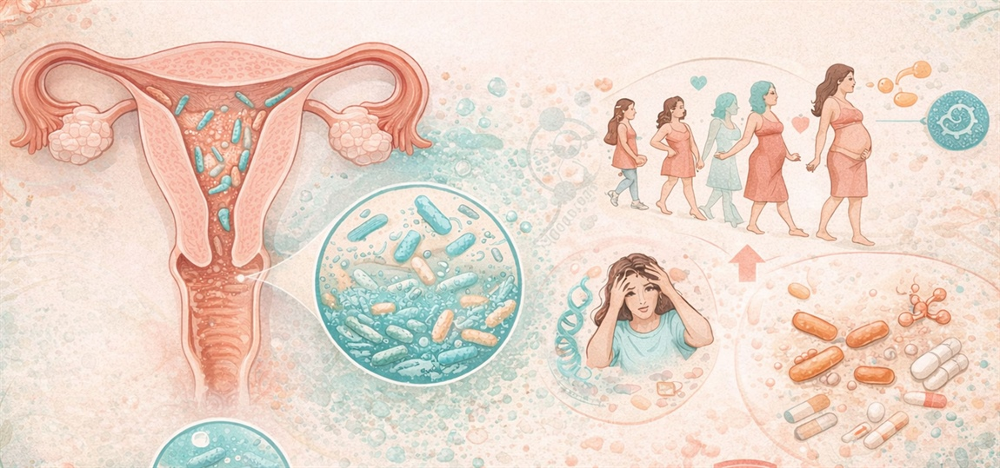
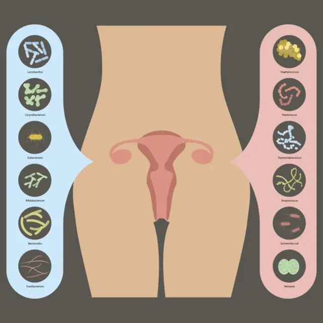
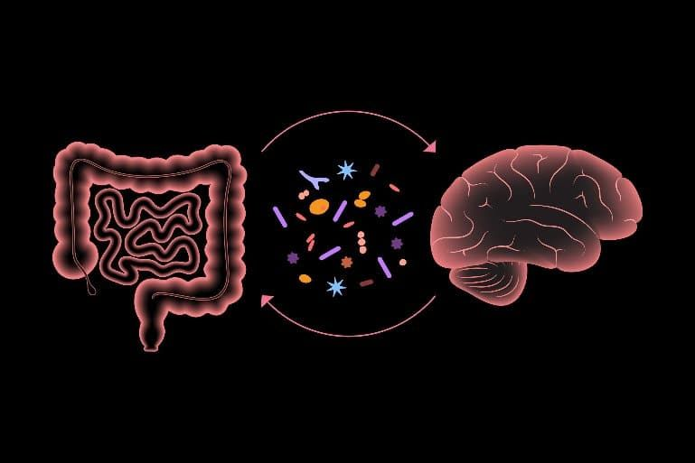
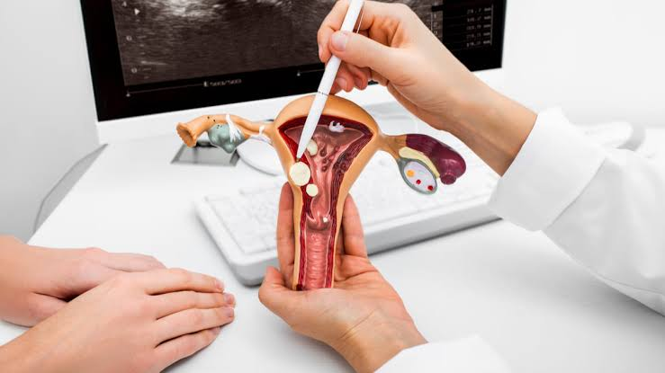
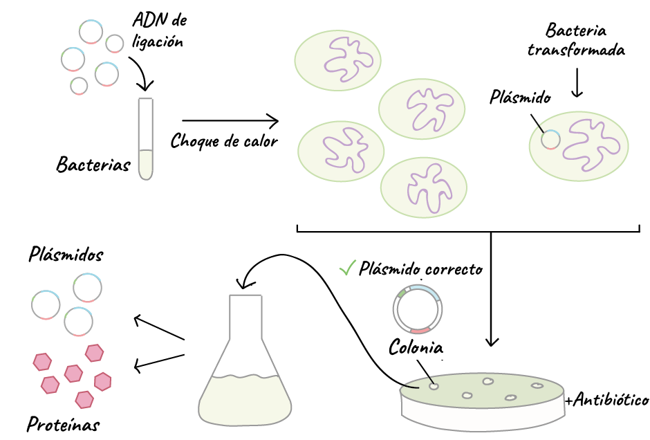

Ingeniería Biomédica • UATCálculo Integral y Diferencial I
Transferencia Microbiana Vaginal en el Parto
Plataforma académica interactiva de modelado matemático, dinámica poblacional microbiana y aplicaciones traslacionales en ingeniería biomédica. Selecciona una división para ingresar:
Equipo de Trabajo:Rodrigo Lara • Mariana Salas V. • Gonzalez Gutirriez Ivanna • Stefany Castro B.
Cátedra:1 A • Catedrático: Fuentes Castro Juan Ángel
Equipo de Trabajo
Rodrigo Lara
Mariana Salas Villanueva
Gonzalez Gutirriez Ivanna
Stefany Alessandra Castro Balboa
Grupo y Carrera1 A • Ing. Biomédica
Unidad de AprendizajeCálculo Integral y Diferencial I
Catedrático TitularFuentes Castro Juan Ángel
Contacto del Equiporodrigolaradelatorre@gmail.com
Transferencia microbiana vaginal en el parto: dinámica biológica, modelado diferencial y diseño biomédico
Un análisis cuantitativo y traslacional del primer inóculo microbiano humano. Este proyecto integra los mecanismos fisiológicos de colonización vertical entre madre y neonato, su formulación analítica mediante cálculo diferencial e integral de poblaciones, y las aplicaciones de la ingeniería biomédica en biomateriales de transferencia controlada y biosensores point-of-care.
Fisiología y transmisión vertical del microbioma en el nacimiento
El tránsito por el canal vaginal constituye el evento biológico fundador del microbioma del recién nacido, con implicaciones determinantes en la educación de su sistema inmunitario y maduración epitelial.
Durante la gestación, los estrógenos inducen un engrosamiento del epitelio vaginal y acumulación de glucógeno, favoreciendo una microbiota de baja diversidad dominada casi exclusivamente por especies protectoras del género Lactobacillus (principalmente Lactobacillus crispatus, L. jensenii y L. gasseri).
Estas bacterias metabolizan el glucógeno hacia ácido láctico, generando un microambiente ácido protector con pH típicamente entre 3.8 y 4.5. Al nacer por vía vaginal, el neonato entra en contacto directo y traga este fluido biológico, impregnando su piel, cavidad bucal, tracto respiratorio superior y tracto gastrointestinal con miles de millones de unidades formadoras de colonias (UFC).
Esta siembra natural promueve la síntesis temprana de IgA secretora, estimula las uniones estrechas (tight junctions) del endotelio entérico y previene la proliferación de patógenos oportunistas mediante competencia por sustratos y secreción de bacteriocinas.

Figura 1. Dinámica del ecosistema microbiano en el aparato reproductor femenino a lo largo de las etapas vitales y la gestación, mostrando la densidad de lactobacilos protectores.
Parto Vaginal (Eutócico)
Inóculo fundador fisiológico: Exposición a Lactobacillus, Bifidobacterium y Prevotella maternos.
Carga inicial masiva: Elevada densidad microbiana inicial ($N_0 \approx 10^5 \text{ CFU/mL}$) permitiendo alcanzar fase de meseta en menos de 24 horas.
Maduración inmunológica: Estímulo oportuno de células T reguladoras ($T_{\text{reg}}$) y tolerancia inmunológica. Menor riesgo de asma y atopia.
Cesárea (Quirúrgica)
Disrupción del inóculo natural: El feto se extrae directamente del útero estéril sin contacto con la flora vaginal.
Colonización nosocomial: La piel y mucosa del neonato son colonizadas por flora ambiental y hospitalaria (Staphylococcus, Streptococcus, Corynebacterium).
Retraso colonizador crítico: Carga inicial reducida ($N_0 \approx 10^2 \text{ CFU/mL}$) y retardo en la expresión de enzimas metabólicas clave.

Figura 2. Taxonomía comparativa: cepas comensales benéficas (Lactobacillus, Bifidobacterium) frente a patógenos oportunistas potenciales en el canal reproductivo.
Figura 3. Microfotografía de contraste de fase (400x). (A) Morfología fisiológica de bacilos de Lactobacillus en eubiosis; (B) Pérdida de lactobacilos en vaginosis con flora anaerobia facultativa.

Figura 4. El eje microbiota-intestino-cerebro. La adecuada siembra neonatal inicial modula la síntesis de metabolitos antiinflamatorios y vías de señalización neuroinmunológica temprana.
Modelado matemático: cálculo diferencial e integral de la colonización
Cómo las herramientas del cálculo infinitesimal permiten cuantificar la tasa instantánea de proliferación y la exposición bacteriana acumulada recibida por el neonato.
En ingeniería biomédica, los procesos biológicos no se describen cualitativamente, sino a través de modelos dinámicos deterministas. El establecimiento de la biomasa microbiana $N(t)$ en el epitelio neonatal está gobernado por una tasa intrínseca de crecimiento $r$ y una limitación física de espacio y nutrientes representada por la capacidad de carga $K$.
Cálculo Diferencial: Tasa Instantánea de Crecimiento
Ecuación diferencial de Verhulst
$$\frac{dN}{dt} = r \cdot N\left(1 - \frac{N}{K}\right)$$
La primera derivada $\frac{dN}{dt}$ define la velocidad instantánea de colonización bacteriana por unidad de tiempo. El factor $(1 - \frac{N}{K})$ representa el amortiguamiento logístico por agotamiento de nichos receptores en la mucosa neonatal.
N(t) Densidad microbiana en el tiempo (CFU/mL)
r Tasa malthusiana intrínseca de división ($h^{-1}$)
K Capacidad de carga mucosal máxima ($\approx 10^6 \text{ CFU/mL}$)
Segunda Derivada y Punto de Máxima Velocidad
Criterio de concavidad e inflexión
$$\frac{d^2N}{dt^2} = r^2 N \left(1 - \frac{N}{K}\right)\left(1 - \frac{2N}{K}\right)$$
Al igualar la segunda derivada a cero ($\frac{d^2N}{dt^2} = 0$), se deduce matemáticamente que la máxima tasa de crecimiento ocurre con exactitud cuando la población alcanza la mitad de su capacidad de carga:
En el parto vaginal, $N_0$ es alto, por lo que $t^*$ se alcanza en pocas horas; en cesárea, el punto de máxima velocidad se posterga severamente.
Cálculo Integral: Inóculo Acumulado
Área bajo la curva (AUC) e integral definida
$$M_{\text{total}}(T) = \int_{0}^{T} N(t)\, dt$$
La integral definida representa la dosis biológica acumulada recibida por el sistema inmunitario en la ventana de tiempo neonatal crítica $[0, T]$.
Integrando analíticamente la curva logística $N(t) = \frac{K}{1 + A e^{-rt}}$ donde $A = \frac{K - N_0}{N_0}$:
$$\int N(t)dt = K \left[ t + \frac{1}{r}\ln\left(\frac{1 + A e^{-rt}}{1 + A}\right) \right]$$
Laboratorio interactivo de dinámica poblacional microbiana
Manipula las variables diferenciales de la ecuación logística ($N_0$, $r$, $K$) y visualiza en tiempo real las diferencias cinéticas entre las vías de parto y la intervención biomédica.
Simulador Cinético de Colonización Neonatal
Solución analítica y cálculo numérico en tiempo real
Escenarios Clínicos Predefinidos
80,000 CFU
Cantidad de bacterias transferidas en el momento $t = 0$.
0.38 h⁻¹
Velocidad intrínseca malthusiana de duplicación celular.
1.0M CFU
Límite asintótico superior impuesto por la superficie mucosal.
48 h
Horas postnatales simuladas.
Biomasa Final N(T)--
Tasa Derivada dN/dt--
Inóculo Acumulado ∫N dt--
Punto de Inflexión (t*)--
Aplicaciones y diseño en ingeniería biomédica
Cómo el ingeniero biomédico transforma un proceso biológico espontáneo en un procedimiento clínico estandarizado, reproducible y seguro mediante biomateriales y biosensores.
La técnica tradicional de vaginal seeding consiste en impregnar una gasa de algodón estéril en el canal vaginal materno antes de una cesárea programada, para luego aplicarla manualmente sobre la boca, cara y cuerpo del neonato.
No obstante, este método empírico adolece de dos retos críticos abordables desde la ingeniería biomédica:
Riesgo de transferencia de patógenos: Si la madre porta asintomáticamente Streptococcus agalactiae (EGB), herpes simple (VHS), Chlamydia o vaginosis bacteriana, el hisopado tradicional no cribado puede provocar sepsis neonatal fulminante o neumonía.
Variabilidad incontrolada en la masa transferida: Las gasas de algodón estándar sufren desecación rápida, provocando lisis masiva de bacterias anaerobias y una tasa de absorción errática en la epidermis neonatal.

Figura 5. Topografía del canal del parto y mucosa cervical: interfase biomecánica donde ocurre la impregnación fisiológica durante el tránsito eutócico.

Figura 6. Ingeniería de cepas microbianas y bioprocesos: selección en cultivo y formulación de consorcios probióticos sintéticos o Live Biotherapeutic Products (LBPs).
Biomateriales Inteligentes
Hidrogeles de liberación y transporte controlado
Diseño de apósitos poliméricos biocompatibles basados en matrices de alginato-quitosano o hidrogeles de colágeno hidratado. Permiten mantener la viabilidad de cepas de Lactobacillus en condiciones anaeróbicas controladas y dosificar la tasa de transferencia tegumentaria siguiendo la Ley de Difusión de Fick.
Sistemas Microfluídicos
Biosensores Point-of-Care (PoC) para screening rápido
Desarrollo de dispositivos microfluídicos lab-on-a-chip con amplificación isotérmica (LAMP) o detección electroquímica para tamizar en menos de 20 minutos la presencia de Streptococcus agalactiae y virus patógenos en el fluido materno antes de autorizar la transferencia.
Biotecnología Farmacéutica
Consorcios bacterianos definidos (LBPs)
En lugar de usar secreciones vaginales crudas sin estandarizar, la ingeniería biológica avanza hacia la formulación de consorcios definidos liofilizados con proporciones estequiométricas calculadas de L. crispatus y B. infantis purificados bajo normas de Buenas Prácticas de Fabricación (GMP).
Simulación de Transferencia por Contacto en Apósito Biomédico
Cinética de transferencia de masa y decaimiento exponencial: $J(t) = J_0 e^{-k_d t}$
Al frotar suavemente el apósito impregnado sobre la epidermis neonatal durante un intervalo $[0, t]$, el flujo bacteriano transferido $J(t)$ decrece con el tiempo por agotamiento de la interfase:
*Nota para diseño biomédico: Un contacto de 4 a 6 minutos logra transferir más del 70% de la carga bacteriana viable sin comprometer la temperatura del neonato.
Evidencia científica y artículos de referencia
Resumen analítico de los estudios internacionales pioneros utilizados para estructurar esta investigación biomédica.
eLife Sciences • 2021 • DOI: 10.7554/eLife.57051
Modeling transfer of vaginal microbiota from mother to infant in early life
Investigación en 665 binomios madre-hijo de la cohorte prospectiva COPSAC2010. Los autores formularon modelos computacionales basados en Ratios Ponderadas de Transferencia (Weighted Transfer Ratios - WTR) comparando muestras vaginales en el 3er trimestre con la microbiota fecal y respiratoria neonatal a la semana 1, mes 1 y año 1. Demostraron empíricamente cómo el modo de parto altera las trayectorias de persistencia bacteriana.
Possible Therapeutic Mechanisms and Future Perspectives of Vaginal Microbiota Transplantation
Revisión exhaustiva sobre el trasplante de microbiota vaginal (VMT) y la siembra en cesáreas. Aborda los mecanismos de protección celular por bacteriocinas, restitución de eubiosis, entrenamiento del eje inmunometabólico, y detalla los requerimientos indispensables de bioseguridad y cribado patogénico requeridos para la práctica clínica estandarizada.
Modelo 3D: Anatomía y Biomecánica del Canal de Parto
Entorno interactivo para la reconstrucción anatómica tridimensional del aparato reproductor materno y la microinterfase de impregnación fisiológica del neonato.
Próxima Integración
Biomodelo Tridimensional y Simulación Tisular
Espacio arquitectónico preparado para alojar el visor 3D interactivo con controles de rotación orbital, corte transversal de capas epiteliales, distribución de colonias de Lactobacillus y visualización de gradiente de pH en tiempo real.
División 03 • Laboratorio Virtual MICROTRACEIngeniería BiomédicaSimulación y Cuantificación
PRÁCTICA — Laboratorio virtual MICROTRACE
Simulación, cuantificación y análisis de muestras microbiológicas asociadas al parto.
Prototipo conceptual de investigación: Los resultados generados son simulados o dependen de los datos introducidos. No constituye una herramienta de diagnóstico clínico.
Fase 1Marco y Alcance
Descripción del proyecto
Fundamento operativo para el análisis computacional de la microbiota asociada al canal de parto y su evaluación cuantitativa en el recién nacido.
El presente proyecto propone el desarrollo de un sistema de apoyo a la investigación destinado a cuantificar y analizar la presencia de microorganismos asociados al proceso del parto y a explorar su posible transferencia desde la madre hacia el recién nacido.
El sistema contempla la recolección controlada de una muestra del conducto vaginal mediante un dispositivo de muestreo diseñado para uso clínico, seguida de su identificación, procesamiento y análisis en un laboratorio. Los resultados obtenidos se incorporan a una plataforma informática junto con información clínica relevante de la paciente, como edad gestacional, tipo de parto, momento de la toma de muestra y otros datos autorizados para la investigación.
La plataforma permite organizar los datos, calcular concentraciones microbianas, comparar muestras y generar indicadores cuantitativos que faciliten el análisis de los resultados. Cuando se disponga de muestras maternas y neonatales compatibles, también podrá explorarse la similitud de sus perfiles microbianos.
Objetivo General
Modelo Computacional e Indicadores Microbiológicos
Diseñar un modelo de medición y análisis computacional que permita cuantificar la carga microbiana detectada en muestras relacionadas con el parto y evaluar, mediante indicadores microbiológicos, la posible relación entre los perfiles maternos y neonatales.
Fase 2Protocolo y Rigor Científico
Metodología propuesta
Secuencia estandarizada de seis etapas para garantizar la trazabilidad, bioseguridad y validez matemática de los datos recabados.
1
Recolección
Obtención de la muestra por personal clínico capacitado mediante un dispositivo estéril y un procedimiento aprobado.
2
Identificación
Asignación de un código de muestra para proteger la identidad de la paciente y asegurar confidencialidad ética.
3
Análisis microbiológico
Procesamiento de la muestra mediante una técnica validada, como cultivo cuantitativo o una técnica molecular apropiada.
4
Registro informático
Incorporación de los resultados y de las variables clínicas autorizadas a una base de datos centralizada.
5
Procesamiento matemático
Cálculo de concentración, normalización de resultados y comparación paramétrica entre muestras pareadas.
6
Visualización
Presentación de indicadores, tablas y gráficas interactivas que permitan explorar patrones y generar hipótesis de investigación.
Alcance y limitaciones
El sistema se plantea inicialmente como una herramienta de investigación y análisis de datos, no como un dispositivo de diagnóstico clínico. La detección de microorganismos en una muestra materna no demuestra por sí sola que estos hayan sido transferidos al recién nacido. Para estudiar esa posibilidad es necesario comparar muestras apropiadas, controlar la contaminación y utilizar procedimientos microbiológicos validados.
Fase 3Simulador Científico de Ingeniería Biomédica
Modelos Matemáticos Interactivos MICROTRACE
Experimenta con los cuatro modelos matemáticos del proyecto, ingresa parámetros, ejecuta cálculos paso a paso y visualiza gráficas computacionales en tiempo real.
Modelo 1 • Cultivo Cuantitativo
Cuantificación de la carga microbiana
Cálculo de concentración bacteriana en UFC/mL a partir de colonias, dilución y alícuota sembrada.
$$C = \frac{N \times FD}{V}$$
Donde: \(C\) es concentración en UFC/mL, \(N\) colonias observadas, \(FD\) factor de dilución inverso y \(V\) volumen sembrado en mL.
Colonias en placa (N ≥ 0)
Dilución inversa (FD > 0)
Alícuota sembrada (V > 0 mL)
Por favor ingresa valores válidos: colonias ≥ 0, y factor de dilución y volumen mayores a cero.
Nota analítica: No uses esta fórmula para datos de PCR o secuenciación, ya que requieren métodos de cuantificación diferentes (ej. copias genómicas por qPCR o metagenómica de lectura).
Concentración Microbiana CalculadaResultado Final
80,000UFC/mL
Procedimiento matemático paso a paso
1Sustitución en la fórmula: C = (80 × 100) / 0.1
2Producto de colonias por factor: 80 × 100 = 8,000 UFC
3División por alícuota sembrada: 8,000 / 0.1 = 80,000 UFC/mL
Significado clínico: La muestra presenta una carga microbiana de 80,000 UFC/mL, ubicada en el rango fisiológico de cultivo cuantitativo en cavidad vaginal.
Distribución y Rango de Referencia ClínicoEscala logarítmica (UFC/mL)
Modelo 2 • Comparación de Parejas Clínicas
Comparación de concentraciones materno-neonatales
Cálculo de la razón porcentual entre la carga microbiana de la madre y del recién nacido.
$$R = \left(\frac{C_n}{C_m}\right) \times 100$$
Donde: \(C_n\) es la concentración neonatal, \(C_m\) es la concentración materna y \(R\) es la razón porcentual relativa.
Carga materna (Cm > 0)
Carga neonatal (Cn ≥ 0)
Por favor ingresa valores válidos: concentración materna > 0 y neonatal ≥ 0.
Rigor metodológico: Solo permite comparar resultados si corresponden al mismo microorganismo, con unidades compatibles y métodos analíticos comparables.
Razón Porcentual Neonatal / MaternaÍndice R
20.0%
Procedimiento matemático paso a paso
1Sustitución en la fórmula: R = (2,000 / 10,000) × 100
2Cociente de concentraciones: 2,000 / 10,000 = 0.20
3Conversión porcentual: 0.20 × 100 = 20.0%
Interpretación automática: La concentración neonatal representa el 20.0% de la concentración materna de referencia.
Este resultado representa una razón entre concentraciones cuantitativas, no el porcentaje real de microorganismos físicamente transferidos de la madre al recién nacido.
Comparativa de Carga: Materna vs NeonatalCm = 10,000 | Cn = 2,000 UFC/mL
Modelo 3 • Ecología Microbiana Comparativa
Similitud de perfiles microbianos (Índice de Jaccard)
Evaluación de la coincidencia taxonómica entre especies identificadas en la madre y el neonato.
$$J = \frac{|A \cap B|}{|A \cup B|} \times 100$$
Donde: \(A\) son especies maternas, \(B\) especies neonatales, \(A \cap B\) especies compartidas y \(A \cup B\) total de especies distintas.
Selecciona los microorganismos detectados en cada muestra (datos ilustrativos de demostración):
Muestra Materna (A)5 seleccionadas
Microbiota detectada en canal de parto
Muestra Neonatal (B)4 seleccionadas
Microbiota detectada en el recién nacido
Advertencia científica: Compartir especies no demuestra por sí solo transferencia directa, causalidad ni identidad de cepas (requiere secuenciación clonal de cepas completas).
Índice de Similitud de JaccardCoeficiente J
50.0%
Desglose de conjuntos taxonómicos
1Microorganismos maternos: |A| = 5
2Microorganismos neonatales: |B| = 4
3Microorganismos compartidos: |A ∩ B| = 3
4Total de microorganismos distintos: |A ∪ B| = 6
5Cálculo de Jaccard: (3 / 6) × 100 = 50.0%
Diagrama de Conjuntos (Venn) de PerfilesMaterno vs Neonatal
Grado de similitud detectado: Existe una similitud del 50.0% en los perfiles microbianos observados. Aclara que compartir especies no demuestra por sí solo transmisión directa ni clonación bacteriana efectiva.
Modelo 4 • Diversidad Alfa (Shannon)
Diversidad microbiana mediante el índice de Shannon
Estimación cuantitativa de la diversidad y equitatividad comunitaria a partir de conteos o abundancias relativas.
Donde: \(H\) es el índice de Shannon, \(p_i\) es la proporción de la especie \(i\) respecto al total (\(n_i / N_{tot}\)) y \(\ln\) es el logaritmo natural.
Lista de Especies y Conteos
Especie / Taxón
Conteo (n)
Acción
Significado ecológico: Un valor mayor de Shannon suele indicar mayor diversidad en el perfil analizado, pero no significa necesariamente mayor carga microbiana ni mayor transferencia materno-neonatal.
Índice de Diversidad de Shannon (H)4 especies
1.269nats
Especie
Conteo
Proporción (\(p_i\))
Contribución (\(-p_i \ln p_i\))
Total
1,000
100.0%
H = 1.269
Distribución de Abundancias RelativasProporción por taxón (%)
Interpretación del perfil: El índice de Shannon estimado es H = 1.269 con un total de 4 especies y 1,000 observaciones acumuladas. Muestra una comunidad equilibrada típica de microbiota vaginal con dominancia de especies comensales.
Fase 4Arquitectura y Trazabilidad
Simulación del flujo de la muestra
Representación conceptual del recorrido clínico y computacional de MICROTRACE desde la recolección hospitalaria hasta el cálculo analítico.
Flujo conceptual del proceso MICROTRACE
Simulación interactiva paso a paso de las seis etapas metodológicas
Etapa 1
Dispositivo de recolección
Pendiente
Etapa 2
Obtención y etiquetado
Pendiente
Etapa 3
Procesamiento en laboratorio
Pendiente
Etapa 4
Ingreso a computadora
Pendiente
Etapa 5
Ejecución de modelos
Pendiente
Etapa 6
Visualización de resultados
Pendiente
Aclaración conceptual: Esta animación representa el flujo de trabajo lógico y orden metodológico del proyecto. No interactúa con sensores físicos ni automatiza ensayos biológicos en tiempo real.
1
Dispositivo de muestreo
Recolección clínica controlada y etiquetado mediante código unívoco de paciente.
2
Laboratorio microbiológico
Procesamiento y obtención de resultados cuantitativos mediante cultivo o biología molecular.
3
Base de datos
Código de muestra, variables clínicas autorizadas y resultados estructurados.
4
Calculadora y panel de análisis
Fórmulas, comparaciones, indicadores cuantitativos y gráficas computacionales.
Figura P2. Integración instrumental y estación de análisis computacional para el procesamiento y modelado de muestras microbiológicas.
Consideración importante
Una consideración importante: en una primera versión, el dispositivo puede servir para recoger y transportar la muestra de forma controlada, mientras que la computadora recibe los resultados del laboratorio. No es necesario que el aparato mida microorganismos directamente. La toma de muestras durante el parto debe realizarse bajo un protocolo clínico validado, con materiales adecuados y supervisión profesional.
Fase 5Bitácora de Resultados
Panel comparativo de la sesión
Historial estructurado de los cálculos ejecutados durante esta sesión en los cuatro modelos matemáticos, con opción de descarga de datos en formato CSV.
Registro de Cálculos Computacionales
0 cálculos registrados en la sesión
Modelo
Datos de entrada
Resultado
Unidad
Estado del cálculo
Bitácora de sesión vacía
Aún no has ejecutado cálculos en esta sesión. Selecciona cualquiera de los cuatro modelos matemáticos, ajusta los valores y pulsa "Calcular" para registrar y comparar resultados aquí.
Navegación Rápida
Continuar Exploración Multidisciplinar
Regresa al menú principal para seleccionar otra área o profundiza en las ecuaciones diferenciales de colonización en Teoría.
Documentos: Repositorio Bibliográfico y Fichas Técnicas
Compendio de artículos científicos indexados, reportes de cálculo analítico diferencial y documentación técnica del proyecto biomédico.
Próxima Integración
Repositorio y Descarga Documental
Repositorio centralizado donde se incorporarán las publicaciones en formato PDF descargable (eLife 2021, MDPI 2023), fichas de derivación de las ecuaciones diferenciales de Verhulst y código fuente de simulación.
 Disponible
Disponible